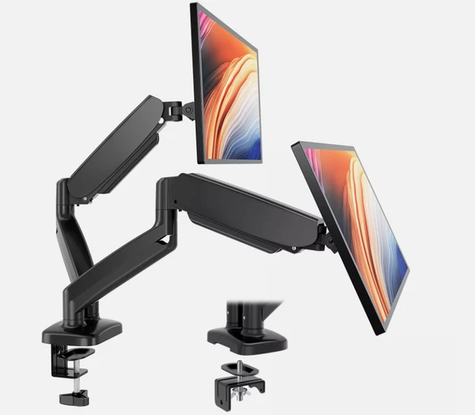

← 全部指南
Best Dual Monitor Arm 2026: What 3 Reviewers Agree On
基于 3 个 YouTube 测评聚合 · 更新于 2026-10-03

HUANUO FlowLift Dual Monitor Stand HNDS6
The category best-seller and best-value dual arm in independent testing: smooth independent gas-spring arms, full tilt/swivel/rotation, and a dual C-clamp base that kills wobble
📊 对比一览
| # | 产品 | 推荐度 | 适合 | 价格 |
|---|
| 1 | HUANUO FlowLift Dual Monitor Stand HNDS6 | 2/3 reviewers | Best value dual setup | $60-$80 |
| 2 | VIVO Dual Monitor Desk Mount STAND-V002 | 3/3 reviewers | Proven budget classic | $35-$50 |
| 3 | Ergotron LX Dual Monitor Arm Side-by-Side | 1/3 reviewers | Premium independent arms | $460-$500 |
| 4 | Workstream by Monoprice Dual Monitor Arm | 1/3 reviewers | Budget dual with gas springs | $100-$135 |
💬 测评共识
共同优点
- HUANUO FlowLift Dual HNDS6: best-value dual arm - the Amazon category bestseller with smooth gas-spring positioning (2/3 mention)
- VIVO STAND-V002: best all-round dual stand in independent testing, tens of thousands of reviews (3/3 mention)
- Ergotron LX Dual Side-by-Side: PCWorld's best dual-monitor arm - fully independent arms with a 10-year warranty (1/3 mention)
- Workstream by Monoprice Dual: PCWorld's best budget dual-monitor arm (1/3 mention)
共同缺点
- Ergotron LX Dual: premium $470+ price - a serious investment for two screens (1/3 mention)
- Budget dual arms: small cable clips, and some desks need reinforcement (2/3 mention)
- Cheaper dual arms can wobble with heavy or fully extended monitors - leave a weight margin (2/3 mention)
🔍 详细解析
HUANUO FlowLift Dual Monitor Stand HNDS6
🛒 去 Amazon 购买 →The best-seller in the category and best-value dual arm in independent testing: effortless gas-spring positioning with fully independent arms, full tilt/swivel/rotation, and built-in cable management.
Max Size: 13-32 in per arm
Max Weight: 4.4-19.8 lbs per arm
Mount Type: Dual C-clamp + grommet
Tilt/Swivel: Gas spring, 360° rotation
VESA: 75x75 / 100x100
适合：Best value dual setup · $60-$80
VIVO Dual Monitor Desk Mount STAND-V002
🛒 去 Amazon 购买 →Best all-round dual stand in independent October 2026 testing, and a PCWorld-tested pick: steel construction, both clamp and grommet hardware, and 22 lbs per arm with the longest track record in the category.
Max Size: 13-30 in per arm
Max Weight: Up to 22 lbs per arm
Mount Type: C-clamp + grommet
Tilt/Swivel: Tilt, swivel, 360° rotation
VESA: 75x75 / 100x100
适合：Proven budget classic · $35-$50
Ergotron LX Dual Monitor Arm Side-by-Side
🛒 去 Amazon 购买 →PCWorld's best dual-monitor arm: two real LX arms on one mount with fully independent adjustment, the same smooth motion as the single LX, and a 10-year warranty.
Max Size: Up to 27 in per arm
Max Weight: 7-20 lbs per arm
Mount Type: Desk clamp + grommet
Tilt/Swivel: ±70° tilt, 360° rotation
VESA: 75x75 / 100x100
适合：Premium independent arms · $460-$500
Workstream by Monoprice Dual Monitor Arm
🛒 去 Amazon 购买 →PCWorld's best budget dual-monitor arm: a tested full-motion dual setup at a fraction of the Ergotron price, with solid build quality for the money.
Max Size: Up to 32 in per arm
Mount Type: Desk clamp + grommet
Tilt/Swivel: Full-motion dual arms
VESA: 75x75 / 100x100
适合：Budget dual with gas springs · $100-$135
📺 视频来源
展开查看 3 个测评视频
📺
PCWorld — Best monitor arms 2026: Tested picks for single- and dual-monitors setups
观看视频 / Watch📺
Vintage Vinyl News — 10 Best Monitor Arms (September 2026) Tested & Ranked
观看视频 / Watch📺
Lexavebrew — 12 Best Monitor Stands for Dual Screens (October 2026) Reviews
观看视频 / Watch